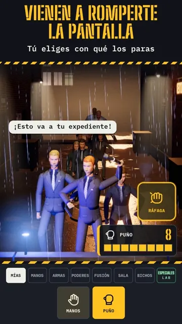
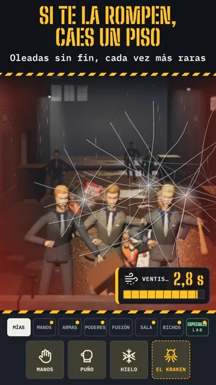
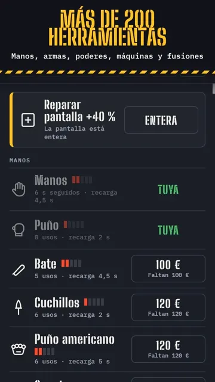
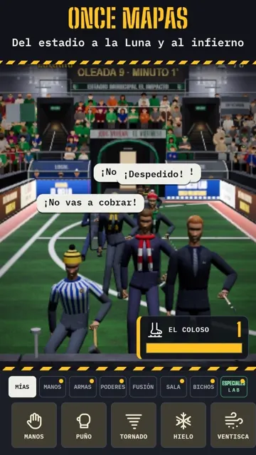
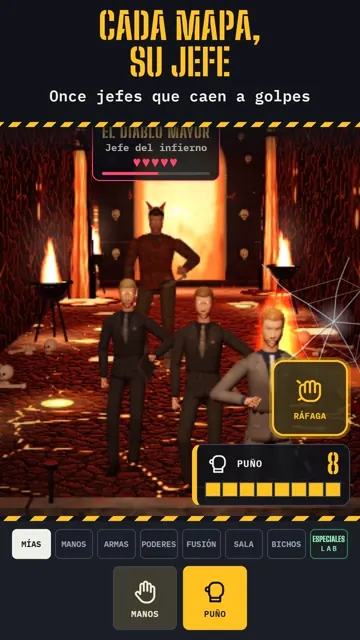
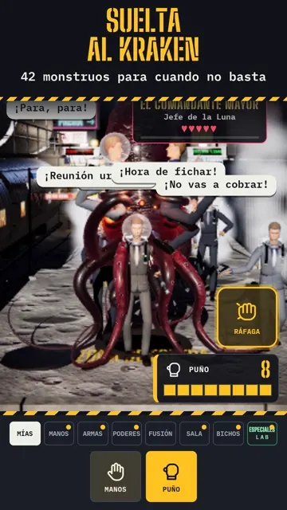
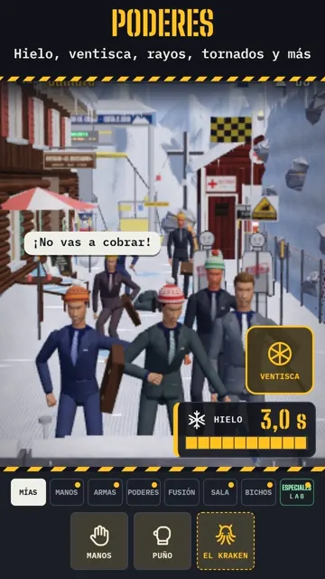
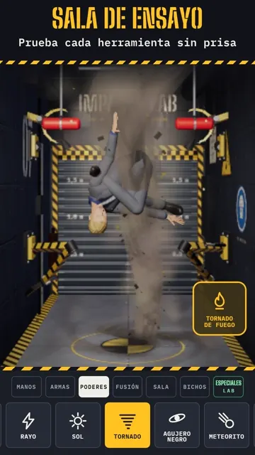

Impacto Lab › Kit de prensa
Kit de prensa
Oleadas de oficinistas vienen a romperte la pantalla del móvil, y tú eliges con qué los paras.
Datos
| Juego | Impacto Lab |
|---|---|
| Desarrollo | Estudio independiente (desarrollador en solitario), España |
| Plataforma | Solo Android (Google Play). No hay versión para iPhone. |
| Estado | Próximamente en Google Play. Prueba cerrada próximamente. |
| Género | Acción, supervivencia por oleadas, física |
| Precio | Gratis |
| Edad | Para mayores de 18 años (violencia gráfica) |
| Idioma del juego | Español |
| Contacto | aminansoporte@gmail.com |
| TikTok | Caos Total y Impacto Lab (@caostotalneon) |
Descripción
Impacto Lab es un juego de acción para Android con un punto de partida sencillo y absurdo: oleadas de oficinistas vienen a romperte la pantalla del móvil, y tú decides con qué los paras. Llegan por la calle con teclados, maletines y extintores, y cada vez son más y más raros.
Cada baja paga, y el dinero se gasta en una tienda con más de 200 herramientas: puños, bates, katanas, armas de fuego, poderes, máquinas, fusiones entre armas y bichos que se sueltan cuando las armas no bastan, del Kraken al Coloso. Hay mapas de la calle a la Luna, el metro y el infierno, y cada uno tiene su jefe con su propia entrada.
Además de las oleadas, la Sala de ensayo deja probarlo todo sin prisa con un muñeco de pruebas, y hay misiones cortas y un modo Arena en horizontal. Todo se mueve con física: cortes, quemaduras, congelación, explosiones y un golpe final a cámara lenta. No hace falta cuenta y se puede jugar sin conexión.
Tráiler
El tráiler está en camino. Mientras tanto, aquí tienes tres clips cortos del juego.
Clips (8 segundos, vertical, con sonido)
- Descargar · Lunes por la mañana (MP4)
- Descargar · Los monstruos (MP4)
- Descargar · No paran de llegar (MP4)
Capturas (1080×1920, vertical)

Descargar · Vienen a romperte la pantalla (JPG)
Descargar · Si la rompen, caes un piso (JPG)
Descargar · Más de 200 herramientas (JPG)
Descargar · Del estadio a la Luna y al infierno (JPG)
Descargar · Cada mapa, su jefe (JPG)
Descargar · Suelta al Kraken (JPG)
Descargar · Poderes (JPG)
Descargar · Sala de ensayo (JPG)
Logo e imágenes


Aviso de contenido
El juego contiene violencia gráfica y sangre y es para mayores de 18 años. El material de esta página se ha elegido sin sangre.
Uso del material
Puedes usar libremente este material para hablar de Impacto Lab.
Contacto
Para entrevistas, códigos de la prueba cerrada o cualquier duda: aminansoporte@gmail.com.